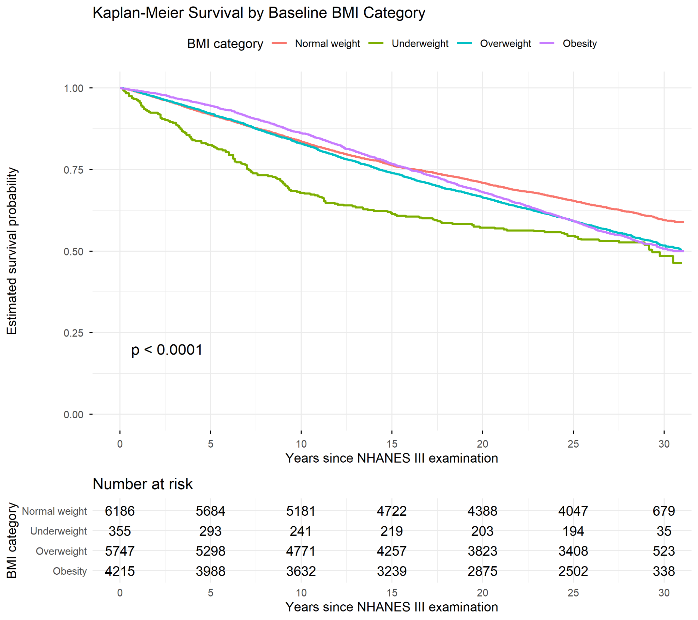
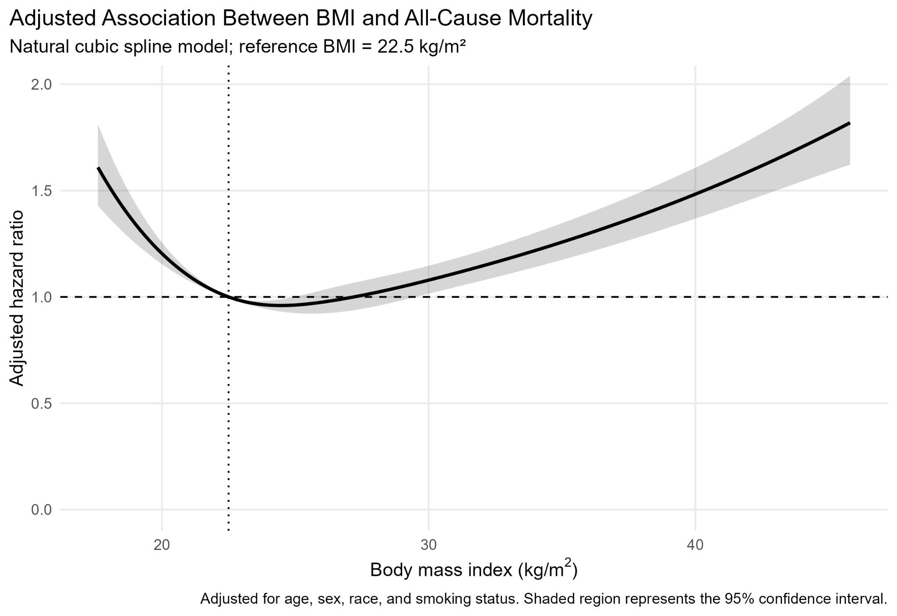

Exposure
Measured baseline BMI, represented as a linear term, standard clinical categories, and a natural cubic spline.
Survival Analysis · R · Epidemiology
A model-building study of how linear, categorical, and spline representations of body mass index shape the interpretation of mortality risk.
The question
BMI is often divided into clinical categories because those categories are easy to recognize and communicate. Statistically, however, categorization can discard information and impose abrupt changes in risk where the underlying relationship may be gradual.
I used BMI and all-cause mortality as an applied setting for a broader question: How does the representation of a continuous predictor influence the conclusions drawn from a survival model? The goal was not simply to determine whether BMI was associated with mortality. It was to compare what is gained and lost when BMI is modeled as a linear term, a set of categories, or a flexible spline.
Data and cohort
The analysis combined NHANES III examination data collected from 1988–1994 with linked mortality follow-up through 2019. This created a setting in which baseline characteristics could be related to both whether a death occurred and how long each participant was observed.
Measured baseline BMI, represented as a linear term, standard clinical categories, and a natural cubic spline.
Time from the baseline examination to death or administrative censoring at the end of mortality follow-up.
Age, sex, race/ethnicity, and smoking status were included in each adjusted Cox model.
Cohort construction
I documented each exclusion rather than reporting only the final sample. Most exclusions resulted from missing measured BMI or incomplete mortality follow-up. The resulting cohort included 16,503 adults with complete information for the primary models.
| Step | Remaining | Excluded |
|---|---|---|
| NHANES III household adult records | 20,050 | — |
| Age 20 years or older | 18,825 | 1,225 |
| Eligible for mortality linkage | 18,806 | 19 |
| Measured BMI available | 16,957 | 1,849 |
| BMI within plausible range | 16,954 | 3 |
| Valid follow-up and mortality status | 16,509 | 445 |
| Complete primary-model covariates | 16,503 | 6 |
Model-building strategy
The analysis moved from descriptive survival patterns to increasingly flexible adjusted models. This progression made it possible to compare interpretability, assumptions, and model fit rather than treating one specification as the automatic choice.
The most parsimonious model estimated an average change in mortality hazard for each one-unit increase in BMI. It is easy to interpret, but it assumes that every one-unit increase has the same effect across the BMI range.
Clinical categories provided familiar comparisons with normal weight as the reference. The tradeoff is information loss and the imposition of abrupt thresholds on a continuous measure.
The spline preserved BMI as continuous while allowing the estimated association to bend across its observed range. Interpretation shifted from a single coefficient to the shape of the adjusted hazard-ratio curve.
Results
Across approaches, mortality risk was elevated at low BMI and increased again at higher BMI values. The clarity and detail of that pattern, however, depended strongly on how BMI entered the model.
Kaplan–Meier curves showed the poorest long-term survival among participants classified as underweight. The overweight and normal-weight groups remained comparatively close for much of follow-up, while the obesity curve diverged more gradually.
These curves were descriptive rather than causal, but they provided an important first indication that a single increasing linear trend might not fully describe the BMI–mortality relationship.

In the linear model, each one-unit increase in BMI was associated with approximately a 1.4% increase in mortality hazard after adjustment. That estimate is concise, but it averages across low and high BMI values that may carry different risks.
The categorical model made those differences easier to see. Relative to normal weight, underweight was associated with substantially higher mortality, overweight showed little evidence of increased hazard, and obesity was associated with a more moderate elevation in risk.
The natural cubic spline revealed a curved association that was difficult to summarize with either one slope or four categories. Estimated mortality hazard was elevated at low BMI, reached its minimum around the normal-weight range, remained relatively stable through much of the overweight range, and increased more sharply at higher BMI values.
This curve became the central result of the project because it shows how flexible modeling can preserve information while avoiding the assumption that risk changes linearly or jumps at category boundaries.

Model comparison
The spline model had the lowest Akaike information criterion (AIC), followed by the categorical and linear models. This does not make the most flexible model automatically correct, but it supports the conclusion that a straight-line representation omitted meaningful structure in the data.
| Model | Parameters | AIC | ΔAIC |
|---|---|---|---|
| Natural cubic spline BMI | 10 | 120,641.8 | 0.0 |
| Categorical BMI | 9 | 120,717.9 | 76.2 |
| Linear BMI | 7 | 120,755.9 | 114.2 |
Diagnostics and interpretation
Schoenfeld residual tests indicated departures from the proportional hazards assumption for several covariates, including BMI, and the global test was statistically significant.
This does not erase the patterns observed in the models, but it limits a simple interpretation of each hazard ratio as a constant effect over the full follow-up period. The Cox estimates are better understood as average relative hazards across follow-up, with the possibility that some associations changed over time.
Treating diagnostics as part of the analysis, rather than as a final checkbox, was essential. It also identified the most meaningful extension: models with time-varying effects or other approaches that relax proportional hazards.
Statistical takeaways
The strongest conclusion from the project is methodological: representing a continuous predictor is a scientific decision, not merely a coding choice.
A single coefficient is efficient and easy to communicate, but it can conceal different patterns at the low and high ends of a predictor.
Clinical thresholds simplify communication while discarding within-category variation and imposing abrupt boundaries.
Spline coefficients are not individually meaningful; the estimated curve is the substantive result.
Assumption checks influence what the model estimates can support and which extensions deserve attention next.
Project resources
This page is designed as a concise project walkthrough. The repository contains the reproducible analysis, while the technical notes preserve the deeper methodological discussion for readers who want more detail.
R scripts, project structure, model objects, and reproducible outputs.
Open GitHub repository → Detailed documentationAn expanded discussion of the modeling decisions, assumptions, diagnostics, interpretation, and interview preparation material.
Open technical notes → Data tableBaseline descriptive characteristics for the overall cohort and each BMI category.
Download Table 1 → FigureFull-resolution unadjusted survival curves with the numbers at risk.
Open figure → FigureFull-resolution adjusted hazard-ratio curve across the BMI distribution.
Open figure → Data tableAIC, log-likelihood, parameter counts, and differences across the three BMI specifications.
Download comparison table →